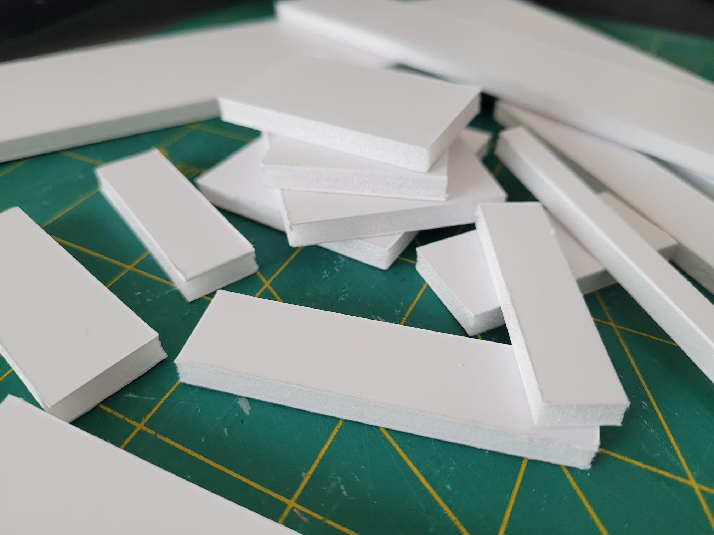

It is with great pleasure that I welcome you to my Internet blog thing, where I am sharing my boardgame inserts as well as general advice and best practices on how to properly fight zipbags (or other similar atrocities) when it comes to game components organization.
Whether a boardgame is loved, sees the table every now and then, or is just a shelved dust collector, it shouldn't endure containing a bunch of zipbags mushed together.
There must be a better way, without breaking the bank, and actually, there is!

Foamboard is love, foamboard is life!